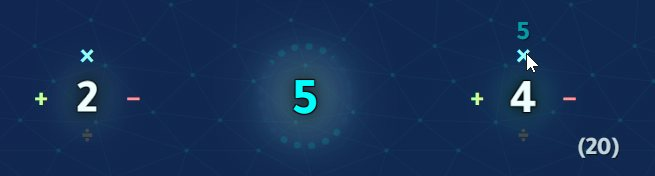

The objective of the game is to reach the target number shown at the top of the screen, using math.
(PREVIEW NUMBERS - the real game happens when you click Start!)
Click a number to select it, then click the operations (
+
−
×
÷
) to use them.
Keyboard input is also supported. Try typing "1 + 2 =" to use
+
on 1 and 2.
How To Play
The objective of the game is to reach the target number shown at the top of the screen, using math.
Click a number to select it. Then, operations (
+
−
×
÷
) will appear all over the other numbers. Click the operation to use it on the two numbers you selected.

For example, here, the number 5 is selected,
and the player is clicking the
×
on 4,
to make 5
×
4 = 20.
The game ends after you use 7 operations, or hit the target number.
Keyboard input is also supported.
There are two new puzzles every day (Normal and Hard). The next puzzle pair arrives in . Hard has more complicated numbers, and up to two modifiers. These modifiers can change the game rules, add and modify operations, and more.
Every day, there is one new Normal puzzle and one new Hard puzzle. The Hard puzzle has more complicated numbers and up to two modifiers.
The first modifier is more impactful than the second:
Countdown
Smart Race
Busco Quadnary
Double Damage
Secondary Modifiers
{[CONCAT]}
{[MODULO]}
{[EXPONENT]}
Click a number to select it. Then, operations (
+
−
×
÷
) will appear all over the other numbers. Click the operation to use it on the two numbers you selected.
For example, here, the number 5 is selected,
and the player is clicking the
×
on 4,
to make 5
×
4 = 20.
The game ends after you use 7 operations, or hit the target number.
Keyboard input is also supported.
There are two new puzzles every day (Normal and Hard). The next puzzle pair arrives in . Hard has more complicated numbers, and up to two modifiers. These modifiers can change the game rules, add and modify operations, and more.
Game created by main_gi
Numberdly Puzzle Library
There are two new puzzles every day (Normal and Hard). Hard has more complicated numbers, and up to two modifiers.
Debug Menu
Honestly these debug menus always get seen by the public anyway which is annoying because this menu looks awful. If you click something here and 'accidentally' lose all your progress it's your fault.
Copied to clipboard!
Statistics Stats
Guess Distribution Puzzle History
Replays don't count towards statistics.
Next Puzzle Pair
The time resets at UTC, the same time for everyone. You can play yesterday's puzzle if you missed it (top right, 🗃️ button).
0
LAST CHANCE!
If you can't hit the target, try to get as close as possible!